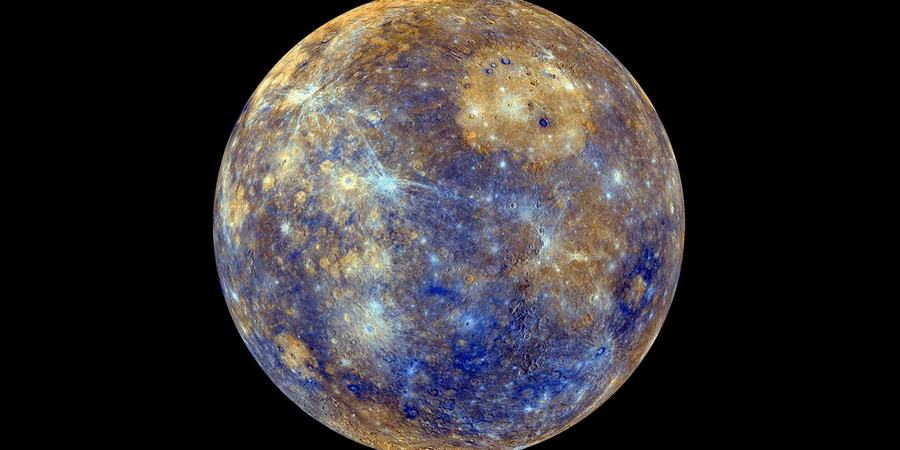
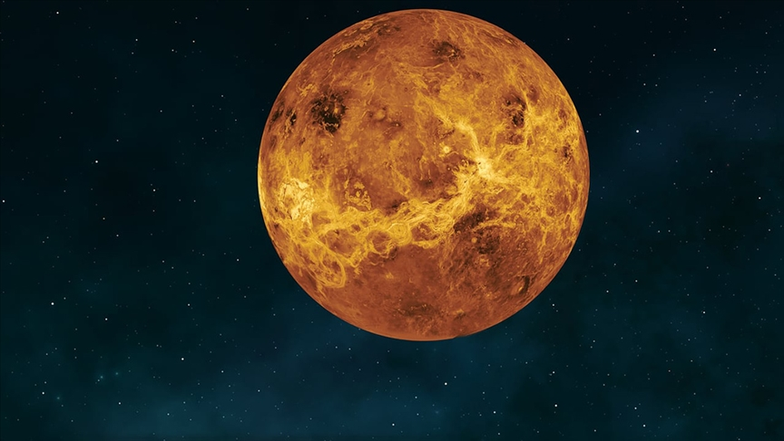
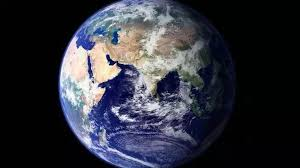
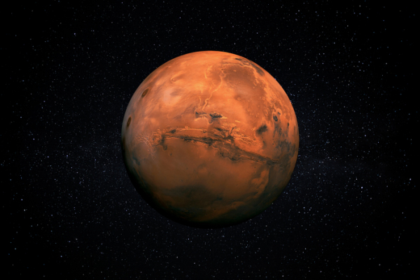
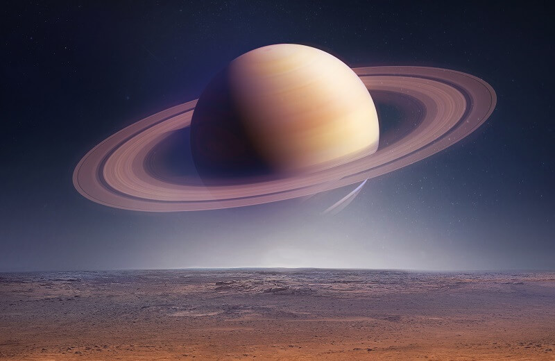
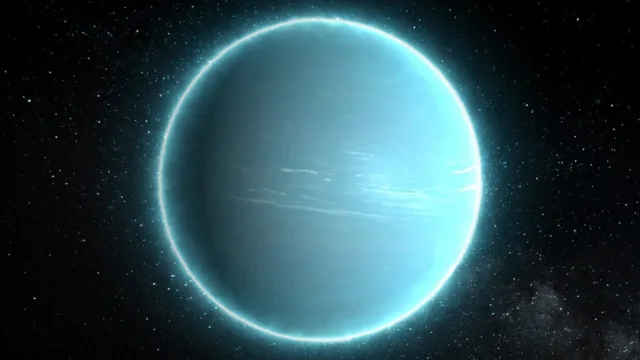
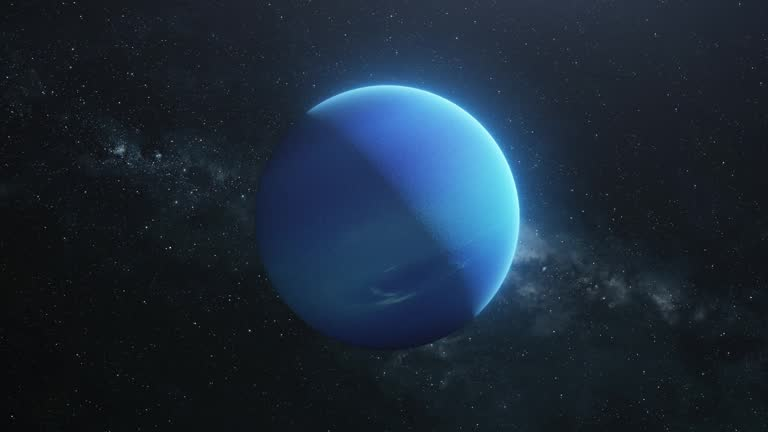

Planets
Mercure
Far smaller and closer to the Sun than it should be, Mercury has long baffled astronomers because it defies much of what we know about planet formation. A new space mission arriving in 2026 might solve the mystery.
At a cursory glance, Mercury might well be the Solar System's dullest planet. Its barren surface has few notable features, there is no evidence of water in its past and the planet's wispy atmosphere is tenuous at best. The likelihood of life being found amidst its scotched craters is non-existent. Yet, look closer and Mercury is a fascinating, improbable world that is shrouded in mystery.
Venus
Venus is the second planet from the Sun, and the sixth largest planet. It’s the hottest planet in our solar system.
Venus is a cloud-swaddled planet and our nearest planetary neighbor. It has a surface hot enough to melt lead.
Earth
While Earth is only the fifth largest planet in the solar system, it is the only planet in our solar system with liquid water on the surface. Just slightly larger than nearby Venus, Earth is the biggest of the four planets closest to the Sun, all of which are made of rock and metal.
Earth is the only planet in the solar system whose English name does not come from Greek or Roman mythology. The name was taken from Old English and Germanic. It simply means "the ground." There are, of course, many names for our planet in the thousands of languages spoken by the people of the third planet from the Sun.
Mars
Mars is no place for the faint-hearted. It’s dry, rocky, and bitter cold. The fourth planet from the Sun, Mars is one of Earth's two closest planetary neighbors (Venus is the other). Mars is one of the easiest planets to spot in the night sky — It looks like a bright red point of light.
Jupiter

Jupiter is the largest and oldest planet in our solar system.
If Jupiter was a hollow shell, 1,000 Earths could fit inside. But the "King of Planets" is no lumbering giant — Jupiter has the shortest day in the solar system, taking about 9.9 hours to spin around once on its axis.
Saturn
Saturn is the sixth planet from the Sun and the second largest planet in our solar system.
Saturn is a massive ball made mostly of hydrogen and helium. It's surrounded by a beautiful ring system. It's the farthest planet from Earth discovered by the unaided human eye.
Uranus
Uranus is the seventh planet from the Sun, and the third largest planet in our solar system – about four times wider than Earth.
Uranus is very cold and windy. It is surrounded by faint rings, and more than two dozen small moons. It rotates at a nearly 90-degree angle from the plane of its orbit. This unique tilt makes Uranus appear to spin on its side.
Neptune
Dark, cold and whipped by supersonic winds, giant Neptune is the eighth and most distant major planet orbiting our Sun.
More than 30 times as far from the Sun as is Earth, Neptune is not visible to the naked eye. Neptune was the first planet located using math.
To learn more about the planets, see the expeditions that have been conducted, and access the photo library, go to the links below.